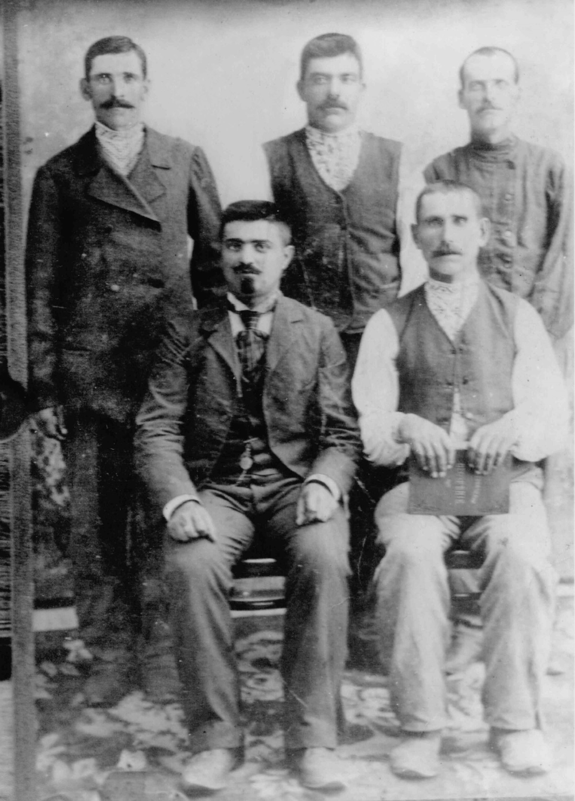
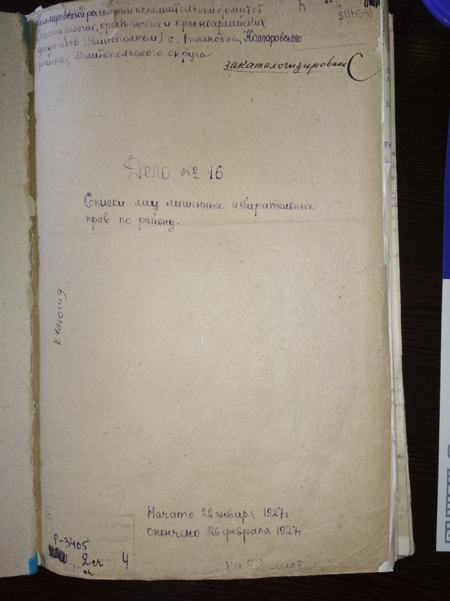
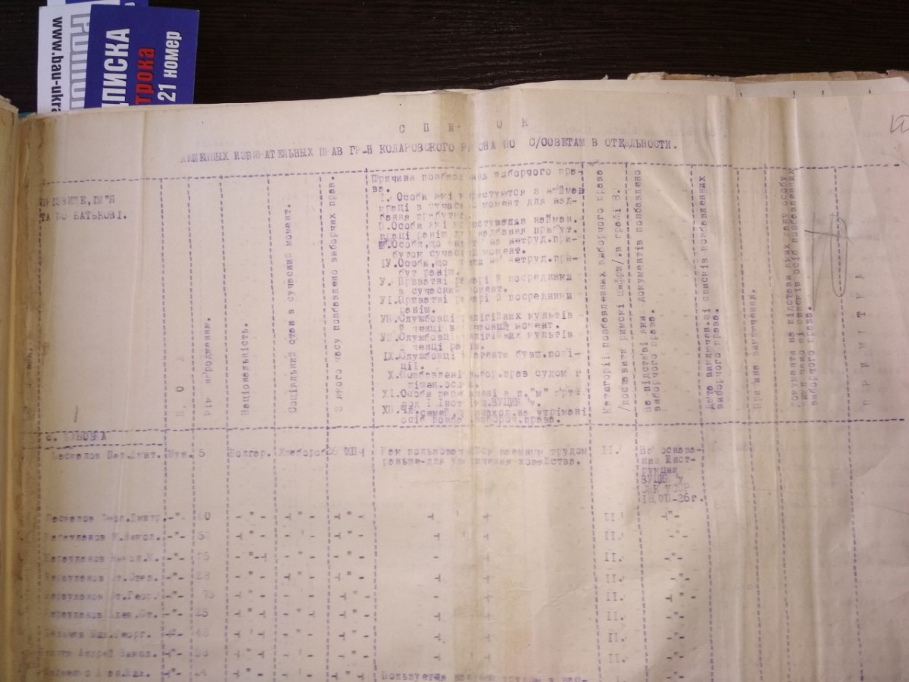
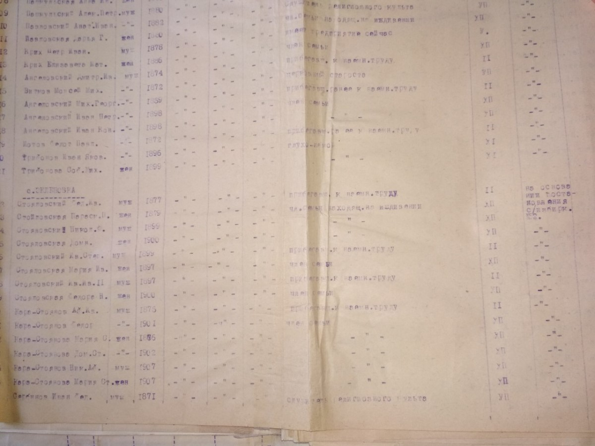
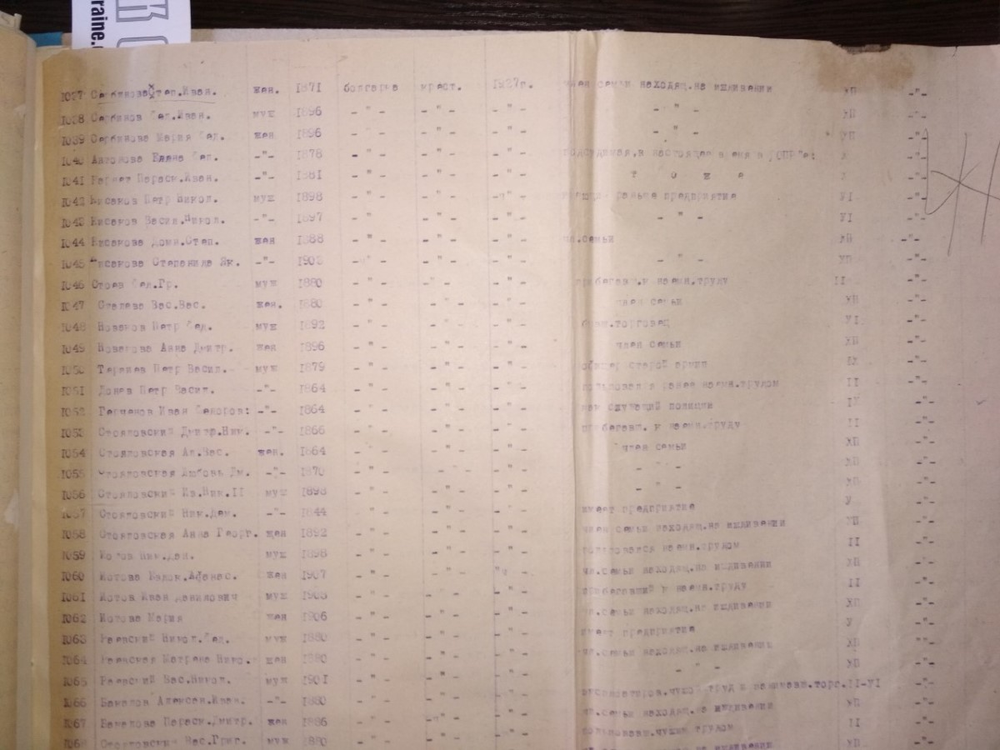

Сербинов Иван Федоров
Родился: 22.02.1873, с. Зеленое (с. Зеленовка)
Умер: 27.10.1932, г. Копейск (брюшной тиф)
Род: Сербиновы
Продолжительность жизни: 59
Место жительства: с. Зеленое (с. Зеленовка)
Основное занятие: крестьянин
Служил старостой в церкви Святого Александра Невского села Зеленое, в 1926 г. был лишен избирательных прав, как служитель религиозного культа (вместе с женой, сыном Федором и его женой, как членами семьи на иждивении).
В мае 1931 года раскулачен и в июне 1931 под конвоем года выслан в Челябинскую область, г. Копейск, пос. шахты 205.
ГАЗапорожской О ф. Р-5593, ОП.2, Д. 1195 МК церкви Святого Александра Невского села Зеленое за 1873 - 1876гг
№? о рождении м. Иоанн 22 февраля (крещение 25 февраля) 1873 года, Родители: Федор Тодоров Сербын и законная жена его Мария Васильева, Восприемники: Иван Минов Карапетров и жена его Анна Велькова дочь.
Запись о рождении https://www.familysearch.org/ark:/61903/3:1:3Q9M-CSSX-7C7R-V?i=869&cat=1043584
Запись о смерти: Отдел ЗАГС администрации г. Копейска №1257 от 01.11.1932: "Сербинов Иван Федорович (60 лет), умер 27.10.1932, брюшной тиф, адрес: спецпоселок, дом № 17"
Отец: Сербинов Тодор (Федор) Тошев (Федоров)
Мать: Сербинова (Кузминова) Мария Васильева
Сестра: Стойловская (Сербинова) Наталья Федоровна
Сестра: Сербинова Марина Федоровна
Сестра: Сербинова Ирина Федоровна
Сестра: Маврова (Сербинова) Доминикия Федоровна
Брат: Сербинов Степан Федорович
Сестра: Сербинова Анна Федоровна
Жена: Сербинова (Кисякова) Стефанида Иванова
Дочь: Сербинова Феодора Ивановна
Сын: Сербинов Федор Иванович
Сын: Сербинов Иоанн Иванович
Дочь: Гайдаржийская (Сербинова) Елена Ивановна
Дочь: Сербинова Марина Ивановна
Дочь: Гайдаржийская (Сербинова) Мария Ивановна
Дочь: Дымова (Сербинова) Анна Ивановна
Дочь: Пеливанова (Сербинова) Феодора Ивановна
Сын: Сербинов Василий Иванович
Дочь: Сербинова Екатерина Ивановна
Колонисты с. Зелёное: около 1920, с. Зеленое (с. Зеленовка). Стоит второй Сербинов Иван Федорович 1873 г.р. Списки лиц, лишенных избирательных прав по району: между 22.01.1927 и 26.02.1927, с. Зеленое (с. Зеленовка). Титульный лист. Списки лиц, лишенных избирательных прав по району: между 22.01.1927 и 26.02.1927, с. Зеленое (с. Зеленовка). Легенда. Списки лиц, лишенных избирательных прав по району: между 22.01.1927 и 26.02.1927, с. Зеленое (с. Зеленовка). Сербинов Иван Федорович - служитель религиозного культа. Списки лиц, лишенных избирательных прав по району: между 22.01.1927 и 26.02.1927. Члены семьи на иждивении. |
 Семья Сербинова Ивана Федоровича 1873 г.р.: около 1929, с. Зеленое (с. Зеленовка). Рукой Сербинова Александра Федоровича на обороте: Семья Сербинова Ивана Федоровича 1873 г.р.: около 1929, с. Зеленое (с. Зеленовка). Рукой Сербинова Александра Федоровича на обороте:1. Иван Федорович (дедушка) 1870-1932 2. Василий Иванович (дядя) 3. Степанида Ивановна (бабушка) 1870-1932 3. Евдокия (тетя жена В.И.) 5. Мама 1895-1975 29/12/75 6. Надежда Федоровна (сестра) 7. Отец (1895-1965) 28/10/65. |